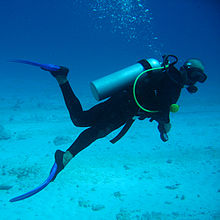
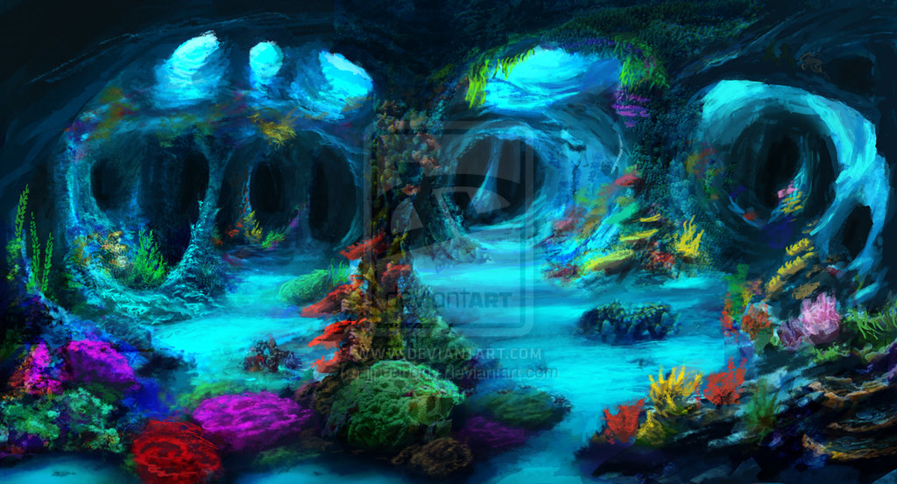
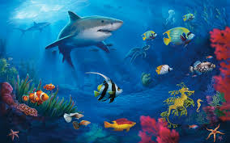
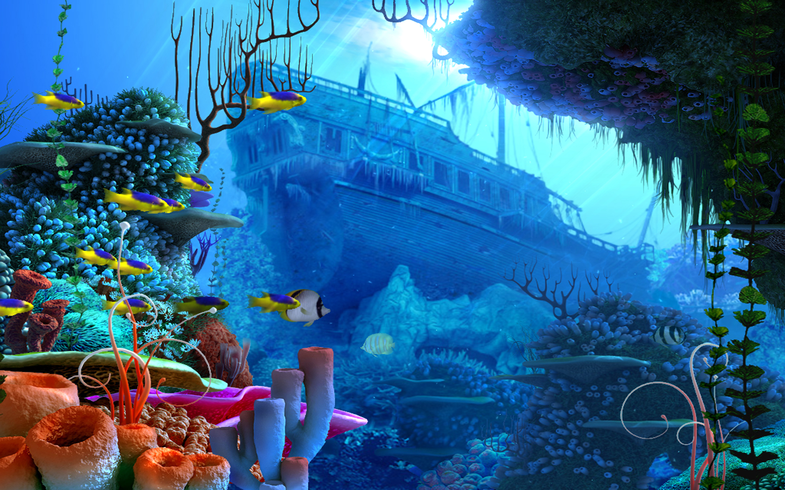

Make a friend that will live in your heart forever when you experience the highlight of your day, a one-on-one dolphin encounter. Learn about dolphin behavior and communication. Wade into the dolphin lagoon. Come nose to bottlenose with one of these fascinating and intelligent animals, take hold of its dorsal fin and hold on for the ride of a lifetime.
Where will your next scuba diving trip take you? There’s a world of underwater adventures out there waiting for you. Scuba diving and traveling go hand-in-hand. Your next trip or liveaboard experience could lead you to your new favorite dive site, best wreck dive, most memorable wall dive or give you the chance to capture that perfect shot of some elusive critter.
If there is any one thing that separates the caves at Aquos from anywhere else on earth, it is their diversity. The ocean caves here are literally filled with marine life such as sponges, lobsters, crabs and shrimp. The entrances of many ocean blue holes can only be described as over stocked aquariums! Inland caves vary from deep fracture caves and sinkholes, to shallower incredibly decorated passages filled with water as clear as air. So whether you are into depth, distance, beauty or the most diverse ecosystems found in any undewater caves in the world , you can be sure that you will find it here in the Bahamas.
Great White Shark riding is the ultimate underwater adventure. Shark riding is safe, fun and an adventure you will never forget. Shark Riding, especially Great White Shark riding, is rapidly becoming the #1 adventure vacation for all marine life enthusiasts.
No one knows shipwrecks better than our world-class team of researchers, scientists, technicians and archaeologists. We search the oceans of the world for treasures and artifacts once thought lost forever, so you can share in our amazing discoveries.